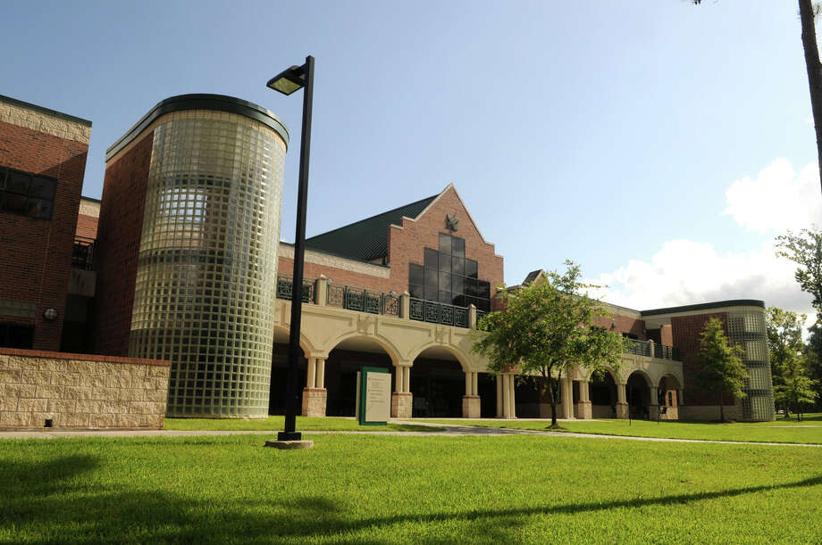

LoneStar College Kingwood, TX

The first college I went to for the start of my second educational journey.
Brief History While Attending LoneStar College
I started Spring of 2017 with two classes. Only taking two classes was my way to see if going back to school at my age would be good for me. I wasn’t sure if I could take the stress of handling lectures, homework, and tests. On the first day of classes, I was terrified of the unknown. I have trained and competed on horseback, trained dogs, and faced a room of 500 people yet the first day of school was the first time my nerves were all over the place. Then I slowly added another class and another until I was taking a full-time load. I met some incredible people and made some lasting friendships. The great thing about going to a community college was there are a lot of people my age. It made the transition back into academia a little easier. Time flew by and before I knew it and it was time for me to a university to finish this journey. My partner was from Speedway, IN. They found a job up here, so I applied to Ball State, IUPUI, Butler, Purdue, and IU Bloomington. To my surprise and horror, I was accepted to all of them. The next part of this journey begins.